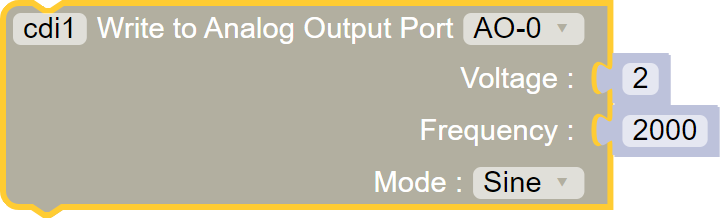
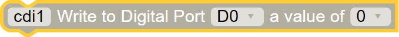
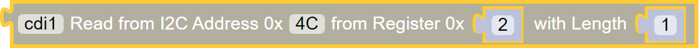
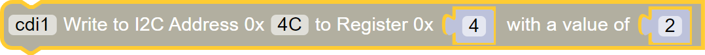

Core Device Interface (45-2201)
Before running the program, be sure to identify each module's FTDI serial number by running the Print Devices function.
List of available blocks:
Setup
This block contains the necessary drivers for our Core Device Interface and must be called at the beginning of the program. The FTDI serial number is used for identifying a Core Control Module and must be entered as shown in the example.
Block:
Code:
import Fusion f = Fusion.driver() import CoreControl c = CoreControl.driver() cdi1 = CoreControl.coreDeviceInterface(c, 'A900VGFC')
Set LED
Turn on or off the on-board LEDs. There is a RED and BLUE LED at the top of the module.
Must have the Setup block at the start of your program for this block to work.Block:
Code:
import CoreControl c = CoreControl.driver() cdi1 = CoreControl.coreDeviceInterface(c, 'A900VGFC') cdi1.setLED(cdi1.RED, 1)
Analog Read
Read from an analog device attached to the corresponding port.
Must have the Setup block at the start of your program for this block to work.Block:
Code:
import CoreControl c = CoreControl.driver() cdi1 = CoreControl.coreDeviceInterface(c, 'A900VGFC') print cdi1.analogRead(cdi1.A0)
Analog Output Write
Output a wave form at a set voltage and frequency from one of the analog output ports. The output can be DC, Sine, Square and Triangle wave forms.
Must have the Setup block at the start of your program for this block to work.Block:

Code:
import CoreControl c = CoreControl.driver() cdi1 = CoreControl.coreDeviceInterface(c, 'A900VGFC') cdi1.analogOutputWrite(cdi1.AO0, 2, 2000, 1)
Digital Read
Read from a digital device attached to the corresponding port.
Must have the Setup block at the start of your program for this block to work.Block:
Code:
import CoreControl c = CoreControl.driver() cdi1 = CoreControl.coreDeviceInterface(c, 'A900VGFC') cdi1.digitalState(cdi1.D0, cdi1.INPUT) print cdi1.digitalRead(cdi1.D0)
Digital Write
Write to a digital device attached to the corresponding port.
Must have the Setup block at the start of your program for this block to work.Block:

Code:
import CoreControl c = CoreControl.driver() cdi1 = CoreControl.coreDeviceInterface(c, 'A900VGFC') cdi1.digitalState(cdi1.D0, cdi1.OUTPUT) print cdi1.digitalWrite(cdi1.D0, 0)
Set PWM
Set a PWM output to a specific port. This port cannot operate servos. The on time parameter sets the pulse width for the channel output in units of 1µS. Setting a value greater than period will result in the output being set to 1. The period parameter sets the pulse repetition period for the channel output in units of 1µS.

Must have the Setup block at the start of your program for this block to work.Block:
Code:
import CoreControl c = CoreControl.driver() cdi1 = CoreControl.coreDeviceInterface(c, 'A900VGFC') cdi1.setPWM(cdi1.P0, 500, 1000)

I2C Read
Read data from an I2C device based on the address of the device, the register location and the length of values to be read.
Must have the Setup block at the start of your program for this block to work.Block:

Code:
import CoreControl c = CoreControl.driver() cdi1 = CoreControl.coreDeviceInterface(c, 'A900VGFC') print cdi1.i2cRead(0x4C, 0x02, 1)
I2C Write
Write data to an I2C device based on the address of the device, the register location a value.
Must have the Setup block at the start of your program for this block to work.Block:

Code:
import CoreControl c = CoreControl.driver() cdi1 = CoreControl.coreDeviceInterface(c, 'A900VGFC') print cdi1.i2cWrite(0x4C, 0x04, [2])
Questions?
Contact Boxlight Robotics at support@BoxlightRobotics.com with a detailed description of the steps you have taken and observations you have made.
Email Subject: Fusion Blockly Core Device Interface